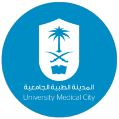

دور الصحة النفسية في دعم المرضى والمراجعين

حين يواجه الإنسان تحديات صحية، لا يقتصر العبء على الجسد وحده، بل يمتد ليلامس الوجدان ويختبر طاقة التحمل والصبر. في تلك اللحظات الفارقة، تصبح الكلمة الطيبة، والاحتواء الصادق، والبيئة الداعمة أكثر من مجرد مواساة عابرة؛ إنها ركائز أساسية تعيد بناء الأمل وتخفف وطأة الألم. نحن نؤمن بأن الإنسان كِيانٌ متكامل، وأن العناية بالصحة النفسية هي الخطوة الأولى والجوهرية التي تسبق وترافق أي رحلة علاجية.
علمياً وإنسانياً، لا يمكن فصل الجسد عن العقل؛ فكل شعور بالخوف أو القلق ينعكس مباشرة على استجابة الجسد.
أثبتت الدراسات أن الطمأنينة وانخفاض مستويات التوتر يساهمان في استقرار وظائف الجسم وتحفيز جهاز المناعة، مما يسرّع من استجابة المريض للعلاج ويدعم قدرته على التشافي.
إن الشعور بالأمان والاحتواء العاطفي يقلل من إدراك الدماغ للألم الجسدي، ويمنح المريض قدرة أكبر على التكيف مع التحديات الصحية والتعايش معها بمرونة.
المريض الذي يتلقى دعماً نفسياً ملائماً يمتلك دافعية أعلى للاستمرار في الخطة العلاجية، ومواجهة الأعراض الجانبية بصبر، مستمداً قوته من الدائرة المحيطة به.
الصحة النفسية دائرة تتسع لتشمل المراجعين، المرافقين، والكوادر التطوعية.
عندما يجد المريض بيئة تتفهم مخاوفه دون أحكام، تتولد لديه ثقة عميقة بمن حوله، وتترسخ قيم التكافل الاجتماعي في أبهى صورها.
يعيش أهل المريض ضغوطاً موازية. توفير بيئة داعمة نفسياً يخفف عنهم ثقل التجربة، ويمنحهم الطاقة المتجددة لمواصلة تقديم الرعاية بحب وصبر.
يخلق قصص إلهام حقيقية؛ حيث يتحول المراجع أو المتطوع إلى مصدر قوة لغيره، وتتحول لحظات الانتظار الصعبة إلى مساحات لتبادل الخبرات.
في شهر رمضان المبارك، تتجلى أسمى معاني الإنسانية والرحمة. إنه مساحة روحية شاسعة لإعادة الاتصال بالذات وبالآخرين.
إن التكافل الذي نعيشه في هذا الشهر الفضيل يترجم إلى أفعال بسيطة ولكنها عظيمة الأثر؛ كالابتسامة الصادقة، والاستماع بإنصات، ومنح مساحة آمنة للبوح لمن أرهقهم مسير العلاج أو قلق الانتظار.
كلنا شركاء في رحلة التعافي. الدعم النفسي التزام إنساني نبيل نمارسه جميعاً. حين نمنح وقتنا، وصدق مشاعرنا للآخرين، فإننا نبني معهم مجتمعاً معافىً، ينبض بالرحمة.